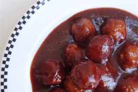

Home
BBQ Meatballs Recipe

Description
These BBQ meatballs are a delicious and easy recipe that can be made in
under 30 minutes.
Ingredients
- 1 pound ground beef
- 1 onion, chopped
- 1 (6 ounce) can tomato paste
- 2 (14.5 ounce) cans diced tomatoes
- 1 (6 ounce) can tomato paste
Steps
- Preheat oven to 350 degrees F (175 degrees C).
-
In a large bowl, combine ground beef, onion, tomato paste, and diced
tomatoes.
- Shape into meatballs and place on a baking sheet.
- Bake in preheated oven for 30 minutes, or until cooked through.